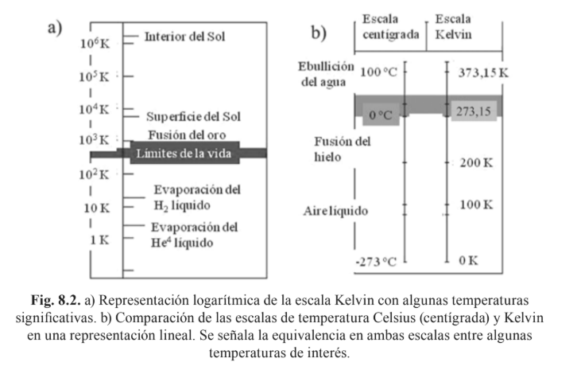

Bloque 7
Termodinámica
Biofísica — Termodinámica y sistemas biológicos
La termodinámica se enfoca en sistemas compuestos por elevados números de partículas, átomos o moléculas. Del orden del número de Avogadro, que es aproximadamente \(6.02 \times 10^{23}\).
Temperatura, Calor y Trabajo
- \(Q\): cantidad de calor transferida (J).
- \(m\): masa de la sustancia (g o kg).
- \(c\): calor específico, es la cantidad de energía que requiere 1 unidad de masa para aumentar su temperatura en 1 °C. Depende del material. Por ejemplo, el agua tiene un calor específico alto, aproximadamente \(4.18\ \mathrm{J/(g\cdot{}^\circ C)}\), por lo que absorbe mucha energía sin cambiar mucho su temperatura.
- \(\Delta T\): cambio de temperatura, es la diferencia entre la temperatura final e inicial.

Solución:
Datos: \(m = 500\) g, \(\Delta T = 100 - 20 = 80\) °C, \(c = 4.184\) J/g·°C.
\[Q = mc\Delta T = (500)(4.184)(80) = 167{,}360 \text{ J} \approx 167.4 \text{ kJ}\] Se necesitan aproximadamente 167.4 kJ de calor.
Leyes de la termodinámica
Ley cero
Aunque se añadió al final, la ley cero sirve como base para las demás. Se refiere al equilibrio térmico. Si dos sistemas están en equilibrio térmico con un tercer sistema, significa que los dos primeros están en equilibrio entre sí. Aunque parezca elemental, esta ley permite inferir que si la temperatura medida por un termómetro en el sistema A (\(T_a\)), es igual a la temperatura medida por un termómetro en el sistema B (\(T_b\)), es decir \(T_a = T_b\), esto quiere decir que los sistemas A y B se encuentran en equilibrio.
Primera Ley
También conocida como ley de la conservación de la energía. La energía no se crea ni se destruye, solo se transforma. De esta ley se infiere que el calor (\(\Delta Q\)) es igual a la energía interna del sistema (\(\Delta U\)) más el trabajo producido (\(\Delta W\)). Esto quiere decir que se puede aprovechar el calor para producir trabajo.
🔗 Explora la simulación: Energy Forms and Changes (PBS Learning Media)
Segunda Ley
La definición estadística de Boltzmann relaciona la entropía con los microestados accesibles: \[S = k_B \ln \Omega\] donde \(S\) es la entropía, \(k_B\) es la constante de Boltzmann \((1{,}38\times10^{-23}\,\text{J/K})\), \(\Omega\) es el número de microestados compatibles con el estado macroscópico y \(\ln\) es el logaritmo natural. Un microestado describe una configuración microscópica concreta de las partículas; por eso, cuanto mayor sea \(\Omega\), mayor será la entropía.
La segunda ley, o la ley de la entropía, dice que el calor siempre fluirá desde el objeto con mayor temperatura hacia el objeto con menor temperatura y no en el sentido contrario. Clausius la enunció así: “Es imposible que una máquina autónoma sin ayuda de un agente externo transfiera calor de un cuerpo a otro más caliente”. De aquí nace el concepto de entropía, una magnitud que mide la relación entre la energía térmica y la temperatura, o la cantidad de energía que no puede ser utilizada para convertirse en trabajo mecánico. Si un sistema reduce la entropía interna, esto produce un aumento de la entropía del entorno. Por esto, la entropía siempre aumenta en el universo.
🔗 Explora la simulación: Difusión (PBS Learning Media)
Aunque el concepto de entropía nace en la termodinámica, no se entendía claramente qué movía la entropía siempre hacia adelante, o en otras palabras, por qué existen procesos que no son reversibles. Posteriormente, la mecánica estadística de la teoría cinética del calor de finales del siglo XIX logró explicar este fenómeno a partir de una explicación estadística. La entropía no surge a partir de una fuerza o un fenómeno físico, sino que surge de un proceso de combinatoria de estados. Así, la definición moderna de entropía es la siguiente: una magnitud que mide el número de microestados equivalentes que generan un mismo macroestado de un sistema. En otras palabras, de cuántas formas posibles se pueden organizar los microelementos de un sistema para obtener un estado en el macrosistema. Con esta definición, se puede reescribir la segunda ley como: un sistema evoluciona a su configuración más probable, que es la que se da con más microestados y coincide con la que mayor entropía tiene.
Tercera Ley
La tercera ley, o ley del cero absoluto, dice que es imposible bajar la temperatura de cualquier sistema a cero absoluto en un número finito de pasos. Es decir, el cero absoluto es solo posible teóricamente.
Trabajo termodinámico
El trabajo termodinámico es la energía transferida cuando un sistema ejerce una fuerza sobre su entorno o cuando el entorno ejerce una fuerza sobre él. En un gas, se produce principalmente cuando cambia su volumen: para un proceso cuasiestático, se calcula como \(W = \int_{V_1}^{V_2} P\,dV\). Esta integral representa el área bajo la curva en un diagrama presión-volumen (\(P\)-\(V\)); por eso, el trabajo depende de la presión y del cambio de volumen durante el proceso. Si el gas se expande, realiza trabajo sobre el entorno y, con este convenio, \(W\) es positivo; si se comprime, el trabajo es negativo. Su unidad en el Sistema Internacional es el joule (J).
\(PV = nRT\)
En esta ecuación, \(P\) es la presión, \(V\) el volumen, \(n\) el número de moles, \(R\) la constante universal de los gases y \(T\) la temperatura absoluta en kelvin. Es válida como aproximación para gases cuyo comportamiento se acerca al de un gas ideal.
- \(P\): presión del gas (Pa).
- \(V\): volumen (m³); \(\Delta V = V_2 - V_1\).
- \(T\): temperatura absoluta (K).
- \(Q\): calor intercambiado (J); positivo si el sistema lo absorbe.
- \(U\): energía interna del sistema (J); \(\Delta U\) es su variación.
- \(W\): trabajo realizado por el sistema (J).
- \(n\): número de moles de gas.
- \(R\): constante universal de los gases = 8,314 J/(mol·K).
- \(C_V,\ C_P\): calores molares a volumen y a presión constante (J/(mol·K)).
- \(\gamma = C_P/C_V\): coeficiente adiabático (≈ 1,4 para el aire).
| Proceso | Se mantiene | Trabajo \(W\) | Primera ley | Curva en P–V |
|---|---|---|---|---|
| Isobárico | Presión \(P\) | \(W = P\,\Delta V = nR\,\Delta T\) | \(Q = \Delta U + W\) | Recta horizontal |
| Isocórico | Volumen \(V\) | \(W = 0\) | \(Q = \Delta U = nC_V\Delta T\) | Recta vertical |
| Isotérmico | Temperatura \(T\) | \(W = nRT\,\ln(V_2/V_1)\) | \(\Delta U = 0,\; Q = W\) | Hipérbola (isoterma) |
| Adiabático | Calor \(Q = 0\) | \(W = -\Delta U = nC_V(T_1-T_2)\) | \(W = -\Delta U\) | \(PV^{\gamma}=\)const (más inclinada) |
🔗 Gas Properties - PV Work : Ideal Gas Law : Diffusion | PhET Simulations
Mecanismos de transferencia de calor
Fichas rápidas
Esquemas de transferencia
Conducción: el calor atraviesa el material sin que este se desplace.
Convección natural: el fluido caliente se vuelve menos denso y asciende.
Radiación: el Sol emite principalmente en visible y el cuerpo humano en infrarrojo.
Tabla comparativa
| Característica | Conducción | Convección | Radiación |
|---|---|---|---|
| Medio necesario | Sólido o fluido en reposo | Fluido en movimiento | No; funciona en el vacío |
| Contacto físico | Sí | Sí, con el fluido | No |
| Transporte de masa | No | Sí | No |
| Parámetro clave | Conductividad térmica | Coeficiente convectivo | Emisividad |
| Sensibilidad a la temperatura | Proporcional a la diferencia de temperatura | Proporcional a la diferencia de temperatura | Muy alta; depende de la temperatura absoluta |
| Ejemplo biológico | Calor a través de la piel | Sangre o viento transportando calor | Radiación infrarroja corporal |
Materiales y absorción
| Material | Comportamiento térmico | Relevancia biológica o ecológica |
|---|---|---|
| Metales | Excelentes conductores | Disipación de calor |
| Agua y tejido blando | Conductividad moderada | Distribución interna de calor |
| Grasa y lípidos | Malos conductores; aislantes | Protección subcutánea en mamíferos marinos |
| Aire atrapado en lana o plumaje | Muy mal conductor | Aislamiento térmico en mamíferos y aves |
| Nieve fresca | Refleja gran parte de la radiación solar | Albedo alto y menor calentamiento |
| Hoja verde | Absorbe selectivamente radiación | Captura luz roja y azul para fotosíntesis |
Exergía
La exergía es la fracción de la energía de un sistema que puede convertirse en trabajo útil cuando ese sistema alcanza el equilibrio termodinámico (térmico, mecánico y químico) con su entorno de referencia. Mientras la energía se conserva siempre, la exergía se destruye en todo proceso real debido a las irreversibilidades, de acuerdo con la segunda ley de la termodinámica.
A diferencia de la energía, la exergía no se conserva: solo se conserva en procesos ideales reversibles. En todo proceso real (fricción, difusión, reacciones químicas, transferencia de calor con diferencias finitas de temperatura) parte de la exergía se destruye irreversiblemente y se convierte en energía no aprovechable, aunque la energía total permanezca constante.
Fuente: Moran, M. J., Shapiro, H. N., Boettner, D. D., & Bailey, M. B. Fundamentals of Engineering Thermodynamics. Wiley. Capítulo sobre análisis exergético.
Termodinámica en sistemas biológicos
Los organismos vivos son sistemas termodinámicos abiertos: intercambian tanto materia como energía con su entorno. A diferencia de los sistemas aislados, los seres vivos pueden mantener estados de alta organización (baja entropía) importando energía libre del ambiente y exportando entropía en forma de calor y desechos.
El metabolismo es fundamentalmente un proceso termodinámico. Las reacciones metabólicas transforman energía química de los nutrientes en trabajo mecánico, transporte activo, biosíntesis y calor. Todas estas transformaciones obedecen las leyes de la termodinámica.
La molécula central del metabolismo energético es el ATP (adenosín trifosfato). Cuando un mol de ATP se transforma en ADP y fosfato, libera aproximadamente 30,5 kJ de energía en condiciones estándar. La célula aprovecha esta energía para impulsar procesos esenciales como el transporte activo, el movimiento y la biosíntesis.
Fuente: OpenStax, Biology 2e, sección 6.4: ATP (adenosín trifosfato).